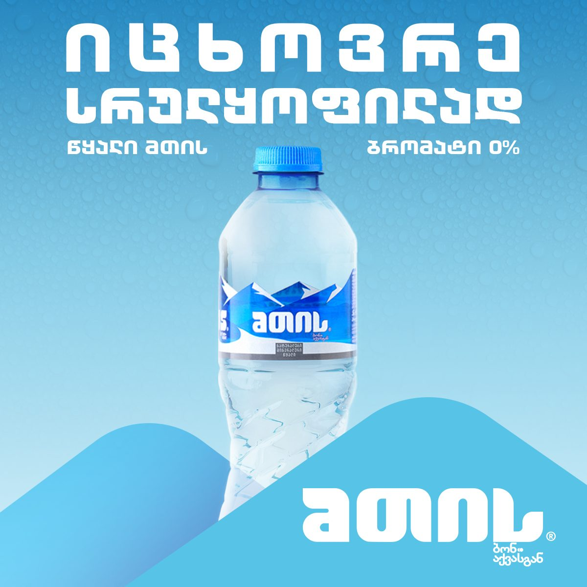
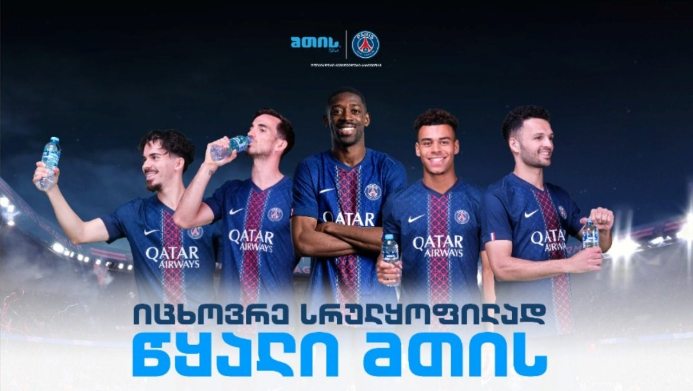

MTIS × Paris Saint-Germain
A Georgian water brand inside a Champions League club
MTIS is bottled under the Coca-Cola franchise in Georgia and sponsors Paris Saint-Germain. The work runs from the stadium perimeter boards to a shoot at the Parc des Princes with the club's players, and back into the Georgian-language campaign all of it had to feed.
- Role
- Created — the campaign visuals, the perimeter-board artwork and the cutdowns from the Paris shoot.
- Scale
- Campaign visuals, perimeter-board artwork, and the cutdowns and behind-the-scenes footage from the Paris shoot.
- Authorship
- Created
- Years
- 2023–2025
- Volume
- 7 pieces on this page · 16:9 3 · 1:1 1 · banner 1 · 4:5 1 · 9:16 1
- Credit
- Produced at AdsomeFish, Tbilisi. Graphic & Motion Designer: Gedevan Kuprava.
Brand campaign 3



Film and motion 3
The last one is behind-the-scenes footage from the Paris shoot, not a broadcast deliverable. It is here because the shoot is the story.